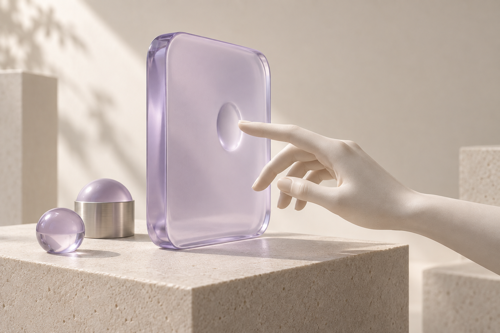
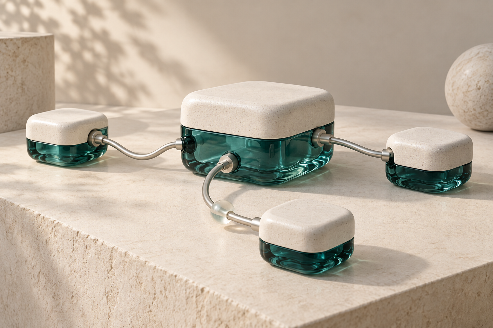

01 / BIG DATA빅데이터데이터를 모으고 처리하는 큰 그림부터Docker와 Spark 분산 처리 실습까지.01데이터 엔지니어링의 큰 그림02Docker와 Spark 환경 구성03Spark 분산 계산과 성능 실습빅데이터 학습 홈 →
02 / HUMAN–COMPUTER INTERACTION인간컴퓨터상호작용사람과 기술의 상호작용을 이해하고,교수님 강조 요약으로 핵심 개념 복습하기.01HCI 3.0의 개념02HCI 3.0과 사용자경험03유용성의 원리HCI 학습 홈 →
03 / NETWORK PROGRAMMING네트워크 프로그래밍소켓 통신의 원리부터 C 자료구조까지.개념을 익히고 코드로 직접 확인하기.01네트워크와 소켓 프로그래밍02소켓 시작하기와 C 기초실습C 실습 컴파일·실행 결과네트워크 프로그래밍 학습 홈 →